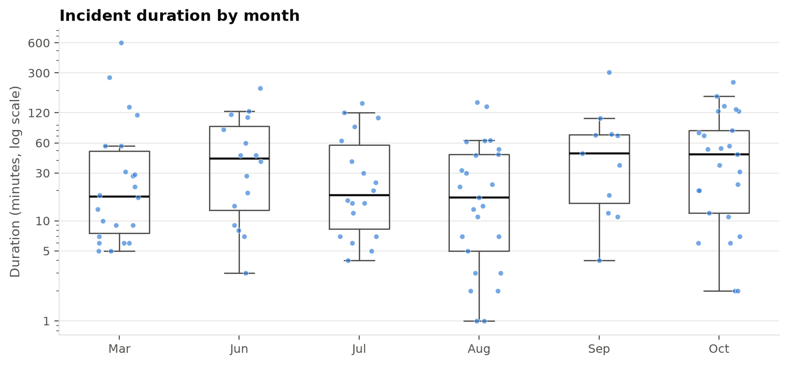

Blocked: Autonomous-Vehicle Blocking Incidents in San Francisco
Frequency, hazard classification, and risk-matrix placement from the 2025 DEM incident log
Robotaxis that become immobilized in the roadway can obstruct general traffic, public transit, pedestrians, and emergency responders. We analyze the 123 AV blocking incidents recorded by the San Francisco Department of Emergency Management (DEM) between February 1, 2025 and October 31, 2025. We design a consequence-based hazard taxonomy and classify each narrative with a transparent rule set, which we compare against supervised models, two zero-shot transformers, and an embedding-similarity baseline. A blind LLM second coder serves as a cross-check (Cohen’s \(\kappa\) = 0.95 with the manual audit). Frequencies are estimated with Poisson and Jeffreys-Bayesian models. Change over time is tested with non-parametric methods suited to six monthly counts and heavily skewed durations. Each hazard is placed on a 5×5 likelihood–consequence matrix with a “risk-curve” rule that pairs each consequence level with its own frequency. Blocking incidents occur about 19.6 times per 30 days, with no statistically detectable trend in rate or duration. AV-involved collisions, emergency-response obstruction, and routine single-AV lane blockages rank highest (Very high). Transit obstruction and multi-AV gridlock are High. Pedestrian/accessibility and occupant-related hazards are Medium.
Every number, figure, and table in this paper is produced by notebooks/av_blocking_analysis.ipynb and exported to project-site/assets/. Inline numbers are read from _variables.yml, so re-running the notebook updates the paper. The incident records come from the San Francisco Department of Emergency Management. Most of the difficult original data cleaning was performed by Dr. Missy Cummings, and this analysis builds directly on that work.
1 Introduction
Driverless ride-hail fleets now operate at scale in San Francisco. When an AV cannot resolve a situation, the safe default is to stop and wait for remote assistance or a field technician. That situation might be an unusual intersection geometry, a dark traffic signal, an emergency scene, a passenger who will not leave, or a software or hardware fault. A stopped vehicle is safe for its occupants but not necessarily for everyone else: it can block lanes, transit, crosswalks, and emergency apparatus, often for long stretches. City agencies record these events as blocking incidents.
This paper asks three questions of the DEM blocking-incident log:
- Frequency. How often do blocking incidents, and each kind of hazard they create, occur, and how uncertain are those estimates?
- Hazard classification. What hazards do these incidents create, and how can free-text dispatcher narratives be classified into them defensibly?
- Risk. Where does each hazard sit on a standard 5×5 red/yellow/green risk matrix, and is anything changing over time?
The emphasis throughout is on conclusions that are statistically defensible given a small, irregular, and imperfect sample. Several steps also require judgment, such as how hazards are defined and how severe an hour-long blockage is. Section 9.1 separates what is measured from what is judged.
2 Data
2.1 Source and cleaning
The primary source is the DEM Incidents sheet of AV-Brick-Report.xlsx. Each record has a date, location, free-text dispatcher narrative, number of AVs involved, and the times the event started and cleared. The records originate with the San Francisco Department of Emergency Management. Dr. Missy Cummings compiled and cleaned them from raw dispatch records, which was the hard part.
We apply light, documented cleaning (Table 1):
- parse the mixed time formats;
- compute duration as clear minus start, modulo 1,440 minutes, so events crossing midnight are handled;
- flag missing and truncated narratives;
- extract the operator;
- treat a missing AV count as at least one.
| Quantity | Value |
|---|---|
| Incidents (primary sheet) | 123 |
| Date range | 2025-02-01 to 2025-10-31 |
| Months present | 2025-02, 2025-03, 2025-06, 2025-07, 2025-08, 2025-09, 2025-10 |
| Covered months used for rates | 2025-03, 2025-06, 2025-07, 2025-08, 2025-09, 2025-10 |
| Covered exposure (days) | 184 |
| Incidents in covered months | 120 |
| Narrative missing | 1 |
| Narrative likely truncated | 83 (67%) |
| AV count missing | 3 |
| Durations crossing midnight | 3 |
| Operator = Waymo / Zoox / unstated | 110 / 1 / 12 |
Narrative truncation. 67% of narratives (83 of 123) appear to have been cut at about 45–60 characters by the export. This limits what any text classifier can recover, and it turns out to matter for the trend analysis (Section 6.3).
Coverage. The log is not continuous. February holds only three incidents, all on its first three days, and April and May are absent. Treating absent months as zero-incident months would bias every rate and trend estimate. All rates and trend tests therefore use the 6 fully covered months (March and June–October: 184 days, 120 incidents). The February incidents still count toward hazard classification and impact scoring. Section 8 shows that the conclusions do not change if February is included.
2.2 Secondary sheets and data engineering
The analyzed workbook (AV-Brick-Report-analyzed.xlsx) contributes four things:
- Extra fields. The AV company’s ETA (given for 22 incidents; median 14.5 minutes), other parties involved, and emergency-responder and transit-impact flags. These are joined on date and location, and all 123 primary rows match.
- A neighborhood zone (1–10) hand-coded in
DEM Incidents Quant(119 of 123 match). The same sheet’s derived flags (multi-AV, 4-hour time-of-day bin, >20 / >40-minute durations) are recomputed from source fields. - 8 additional incidents that have narratives but no times. They are excluded from duration analysis but used in a frequency sensitivity check.
- The
plots and statssheet. Monthly duration summaries, a six-group normality/rank-sum table, and a March-vs-October Mann–Whitney test (W = 377, p = 0.063). We replicate this result and extend it in Section 6.
The analyzed sheet’s emergency-responder flag marks responder involvement, for example police called to direct traffic around a stalled AV. It does not mark obstruction of an emergency, so it is kept as a feature and does not define a hazard.
3 Hazard taxonomy and narrative classification
3.1 Design principles
A hazard is defined by its consequence: what the immobilized AV obstructed or put at risk. Two design rules make the classes defensible.
- Consequence and cause are separate axes. Why the AV stopped (a vehicle fault, a dark signal, a passenger, a routing edge case) is recorded separately as a contributing cause. Ad-hoc incident codes often mix the two, producing overlapping categories whose frequencies cannot be compared.
- Mutually exclusive and exhaustive, by precedence. An incident can match several descriptions, for example two AVs stuck at a working fire. Each incident takes the most severe class it matches, in the order H1 > H2 > … > H7, with H7 as the default. Every incident therefore counts exactly once, and frequencies add up to the total.
H6 (multi-AV clustering) is a class of its own because several AVs failing together at one site signals a common-mode, fleet-level failure, a mechanism distinct from one vehicle’s fault. It also takes a disproportionate share of road capacity. Single events in the log involve up to 60 vehicles.
| Code | Hazard | Definition |
|---|---|---|
| H1 | AV-involved collision | The AV made (or was reported to make) contact with another road user, vehicle, or animal, leaving the AV or the scene blocking the roadway. |
| H2 | Emergency-response obstruction | The AV obstructed an emergency response (medics, fire, police) or became stuck inside an active emergency scene (fire, crash scene, police investigation). |
| H3 | Transit / rail obstruction | The AV blocked a public-transit vehicle, lane, or track (Muni bus or rail, cable car) or a railroad track. |
| H4 | Pedestrian / accessibility obstruction | The AV blocked a crosswalk, curb ramp, or bike lane, pushing vulnerable road users into traffic. |
| H5 | Occupant-related immobilization | A passenger condition or action immobilized the AV: unresponsive/asleep rider, occupant trapped or calling for help, or a door left open. |
| H6 | Multi-AV clustering / gridlock | Two or more AVs immobilized together at one location (a common-mode, fleet-level failure) with none of the above consequences. |
| H7 | Single-AV traffic obstruction | One AV stalled in a travel lane, intersection, or roadway, obstructing general traffic only. Default class. |
3.2 Classification method
Choosing a classifier is a question of fit to the data. The data here are 123 short, often truncated narratives written in dispatcher shorthand (blkng, ntfyd, LP). There are no gold-standard labels, and the safety-relevant classes have only 4–9 examples. We compared five families of approach:
- Transparent rules: keyword and regular-expression patterns plus the AV-count field, implemented in
av_blocking.taxonomy. - Supervised TF-IDF models: word and character n-grams with multinomial logistic regression, and with XGBoost (Chen and Guestrin 2016).
- Zero-shot NLI transformers (Yin, Hay, and Roth 2019): BART-large-MNLI (Lewis et al. 2020) and a DeBERTa-v3-large model fine-tuned on several NLI datasets (He, Gao, and Chen 2023; Laurer et al. 2024). Each plain-language hazard description becomes the hypothesis “This incident report describes {description}”, and the model scores how strongly the narrative entails it.
- Embedding similarity: a sentence-embedding model (mxbai-embed-large (Mixedbread AI 2024); see Reimers and Gurevych (2019) for the approach) embeds each narrative and each hazard description, and the most similar description (cosine similarity) wins.
- Majority-class baseline.
All three pretrained models use the same six hazard descriptions and see no labeled examples from this log. Each was run once on CPU, and its predictions are cached in data/processed/.
Fine-tuning a transformer was not attempted. With so few examples it would overfit, and the result could not be audited.
As a reference, every narrative was read and hand-coded, with notes on ambiguous cases (data/labels/manual_hazard_labels.csv). Agreement between the rules and the manual labels is 99.2% (Cohen’s \(\kappa\) = 0.99) (Cohen 1960), where
\[ \kappa = \frac{p_o - p_e}{1 - p_e}, \]
\(p_o\) is the observed agreement and \(p_e\) the agreement expected by chance from the label margins. The rules were written by the same analyst who made the reference labels, so this figure is an internal-consistency check, not an independent validation. The one remaining disagreement is a genuinely ambiguous crash scene (Table 9).
Blind second coder. To address the single-analyst problem, a second coder from a different model family labeled all 123 incidents blind: OpenAI’s Codex (based on GPT-6; the exact build is not exposed). It received only a label-free packet (data/labels/blind_audit/): the narratives and AV counts, plus a coding guide with the seven definitions, the precedence and AV-count rules, and a glossary of dispatcher shorthand. The guide contained no worked examples. Codex reported opening no other file, and the repository confirms it modified nothing else. It was told to judge each narrative itself rather than use keyword scripts, and to give a confidence level and rationale per incident.
It agreed with the manual audit on 119 of 123 incidents (\(\kappa\) = 0.95) and with the rules on 120 (\(\kappa\) = 0.96). Fleiss’ \(\kappa\) across all three coders is 0.965 (Table 3). The 4 disagreements share one pattern: Codex read truncated narratives more literally, declining to infer a transit or occupant consequence that the visible text does not state. It flagged 3 of them as low confidence itself (Table 4). On review, every disagreement is a defensible judgment call either way, so the labels and rules were kept unchanged. Because this is a language-model second coder, the agreement is evidence that the taxonomy can be applied consistently from its written definitions. It is not a substitute for human inter-rater reliability: two language models may share biases from training.
| Coder A | Coder B | Agree | Percent | Cohen kappa |
|---|---|---|---|---|
| LLM second coder (Codex) | Manual audit | 119/123 | 96.7% | 0.947 |
| LLM second coder (Codex) | Rules | 120/123 | 97.6% | 0.96 |
| Manual audit | Rules | 122/123 | 99.2% | 0.987 |
| All three | (Fleiss) | 0.965 |
| Incident | Narrative | Manual | Rules | Codex | Codex confidence | Codex rationale | Resolution |
|---|---|---|---|---|---|---|---|
| INC-040 | Traffic lights are out..hazard for Muni trains..DPT trying | H3 | H3 | H7 | low | Traffic lights were out and Muni trains faced a hazard, but AV obstruction of transit is not stated. | Kept H3. The text does not say the AV blocked transit, but the analyzed sheet’s transit-impact flag is Y. |
| INC-041 | Subj inside of a Waymo rtl..AV stationary LP 76962Y3 | H5 | H5 | H7 | medium | A subject was inside a stationary Waymo, but no occupant condition or action causing immobilization is stated. | Kept H5. An occupant inside a stopped AV; whether they caused the stop is not stated. Either code is defensible. |
| INC-066 | Traffic hazard due to a veh accident..need PD for traffic control..tow truck en route no eta..PD resp..Waymo able to move AV..no need for PD | H1 | H2 | H2 | low | A vehicle accident required traffic control, suggesting an active crash scene; the AV relation to that scene is unclear. | Kept H1 (manual) / H2 (rules). Already flagged as ambiguous; Codex sided with the rules. |
| INC-112 | Waymo is near the railroad track blocking the | H3 | H3 | H7 | low | The Waymo was near a railroad track and blocking an unspecified object; the truncation does not establish track obstruction. | Kept H3. Truncated before saying what was blocked; Codex’s stricter H7 is also defensible. |
The learned models are scored out-of-sample, by 4-fold × 5-repeat stratified cross-validation (Table 5, Figure 1). They improve only modestly on the majority baseline: macro-F1 0.47 for logistic regression and 0.32 for XGBoost, against 0.25 for the baseline. Logistic regression’s F1 on emergency obstruction is 0, and the rare, high-consequence classes are precisely the ones that drive the risk matrix.
The pretrained models split into two groups (Table 5, Table 7):
- Zero-shot NLI does not help, and a bigger model does not fix it. BART-large-MNLI reaches macro-F1 0.4. The larger, newer DeBERTa-v3 model does slightly worse, at 0.32, with F1 = 0 on emergency obstruction. The difference from BART is not significant (paired bootstrap ΔF1 = -0.07 (-0.20 to +0.05); McNemar p = 0.064). Both NLI models label about a third of all narratives “collision” (38 and 39 incidents, against 7 in the audit). General-purpose NLI models do not read dispatcher shorthand well, regardless of size.
- Embedding similarity is the strongest label-free method. It reaches macro-F1 0.62, significantly better than BART-MNLI (ΔF1 = +0.22 (+0.08 to +0.36)). It is the only non-rule method with real skill on emergency obstruction (F1 = 0.67). It edges out cross-validated logistic regression, though not significantly (ΔF1 = +0.09 (-0.06 to +0.23); McNemar p = 0.119). Its errors run the other way from NLI: it assigns too many incidents to transit and to pedestrian/accessibility.
- A frontier LLM given the written coding guide is in a different league. Scored the same way, the blind Codex second coder reaches macro-F1 0.95 (\(\kappa\) = 0.95), with F1 = 0.92 on emergency obstruction. The deciding factor is the guide (definitions, precedence, shorthand glossary), which the zero-shot models never see, as much as raw model size.
The significance tests are paired, because every classifier labels the same incidents (Table 8). The exact McNemar test (McNemar 1947) uses only the discordant incidents, those one model gets right and the other wrong. With \(b\) and \(c\) such incidents, under \(H_0\), \(b \sim \operatorname{Bin}(b + c, \tfrac12)\). The macro-F1 difference gets a paired percentile-bootstrap 95% interval (Efron and Tibshirani 1993) from 5,000 resamples of incidents. Supervised models enter with their out-of-fold predictions.
Choice: the rule set, with the LLM as a cross-check. A guided frontier LLM labels almost as well as the rules, so the choice is not about raw accuracy. It rests on four properties a hazard classification feeding a risk matrix needs:
- Auditable. Every label traces to a named pattern that a reviewer can read and challenge. An LLM’s rationale is a post-hoc explanation, not the mechanism.
- Reproducible. The rules give the same output forever. Hosted LLMs change version silently; Codex could not even report its exact build, so its labels cannot be regenerated bit-for-bit.
- Precise where it matters. The rules encode the severity-first precedence and the AV-count rule exactly, and handle dispatcher shorthand and truncation explicitly.
- Cheap and local. No API cost, no download, and no need to send incident records to a third-party service.
The rules’ weakness is generalization: they were written after reading these narratives and may miss phrasings in future logs. The guided LLM is the natural safeguard. Run it on new data, and treat its disagreements with the rules as candidates for review. If the log grows to several hundred incidents, the manual and LLM labels together could train a supervised model.
| method | family | macro_F1 | macro_F1_sd | accuracy | kappa |
|---|---|---|---|---|---|
| Majority class + count rule | Baseline | 0.249 | — | 0.724 | 0.433 |
| TF-IDF + XGBoost (CV) | Supervised (cross-validated) | 0.32 | 0.074 | 0.735 | 0.477 |
| TF-IDF + logistic regression (CV) | Supervised (cross-validated) | 0.47 | 0.085 | 0.774 | 0.582 |
| Zero-shot BART-large-MNLI | Pretrained, no training | 0.396 | — | 0.585 | 0.378 |
| Zero-shot DeBERTa-v3-large NLI | Pretrained, no training | 0.323 | — | 0.504 | 0.279 |
| Embedding similarity (mxbai-embed-large) | Pretrained, no training | 0.62 | — | 0.691 | 0.563 |
| LLM + coding guide (Codex, GPT-6-based) | LLM with coding guide | 0.946 | — | 0.967 | 0.947 |
| Rule-based (selected; in-sample) | Rules | 0.978 | — | 0.992 | 0.987 |
| Hazard | n (manual) | TF-IDF + logistic regression | TF-IDF + XGBoost | Zero-shot BART-large-MNLI | Zero-shot DeBERTa-v3-large NLI | Embedding similarity (mxbai-embed-large) | LLM + coding guide (Codex, GPT-6-based) | Rule-based |
|---|---|---|---|---|---|---|---|---|
| H1 Collision | 7 | 0.67 | 0.4 | 0.31 | 0.26 | 0.62 | 0.92 | 0.92 |
| H2 Emergency obstruction | 6 | 0 | 0 | 0.33 | 0 | 0.67 | 0.92 | 0.92 |
| H3 Transit obstruction | 8 | 0.46 | 0.22 | 0.22 | 0.21 | 0.47 | 0.86 | 1 |
| H4 Ped/accessibility | 4 | 0.33 | 0 | 0 | 0.4 | 0.43 | 1 | 1 |
| H5 Occupant-related | 9 | 0.46 | 0 | 0.5 | 0.2 | 0.67 | 0.94 | 1 |
| H6 Multi-AV gridlock | 17 | 0.94 | 0.94 | 0.67 | 0.48 | 0.71 | 1 | 1 |
| H7 Single-AV obstruction | 72 | 0.86 | 0.83 | 0.74 | 0.71 | 0.78 | 0.98 | 1 |
| Hazard | Manual audit | Zero-shot BART-large-MNLI | Zero-shot DeBERTa-v3-large NLI | Embedding similarity (mxbai-embed-large) |
|---|---|---|---|---|
| H1 Collision | 7 | 38 | 39 | 6 |
| H2 Emergency obstruction | 6 | 6 | 5 | 9 |
| H3 Transit obstruction | 8 | 1 | 11 | 22 |
| H4 Ped/accessibility | 4 | 2 | 1 | 10 |
| H5 Occupant-related | 9 | 3 | 1 | 12 |
| H6 Multi-AV gridlock | 17 | 10 | 8 | 11 |
| H7 Single-AV obstruction | 72 | 63 | 58 | 53 |
| A | B | Only A correct | Only B correct | McNemar p | Macro-F1 A - B (95% CI) | CI excludes 0? |
|---|---|---|---|---|---|---|
| Zero-shot DeBERTa-v3-large NLI | Zero-shot BART-large-MNLI | 7 | 17 | 0.064 | -0.07 (-0.20 to +0.05) | No |
| Embedding similarity (mxbai-embed-large) | Zero-shot BART-large-MNLI | 28 | 15 | 0.066 | +0.22 (+0.08 to +0.36) | Yes |
| Zero-shot BART-large-MNLI | TF-IDF + logistic regression (CV) | 10 | 35 | < 0.001 | -0.14 (-0.29 to +0.02) | No |
| Zero-shot DeBERTa-v3-large NLI | TF-IDF + logistic regression (CV) | 7 | 42 | < 0.001 | -0.21 (-0.39 to -0.03) | Yes |
| Embedding similarity (mxbai-embed-large) | TF-IDF + logistic regression (CV) | 19 | 31 | 0.119 | +0.09 (-0.06 to +0.23) | No |
| Incident | Rule | Manual | Narrative | Note |
|---|---|---|---|---|
| INC-066 | H2 | H1 | Traffic hazard due to a veh accident..need PD for traffic control..tow truck en route no eta..PD resp..Waymo able to move AV..no need for PD | Ambiguous: ‘veh accident’ with the Waymo subsequently moved and a tow en route suggests AV involvement. |

3.3 Contributing causes
Table 10 cross-tabulates hazard against contributing cause. Most narratives give no cause at all (“stalled”, “stuck”). That reflects the terse, truncated dispatcher text, and it is why cause is reported descriptively rather than used to define hazards.
| Hazard | AV collision / contact | External event or scene (fire, crash, protest, police activity) | Infrastructure failure (signal or power outage) | Maneuver or routing edge case (turn, parking lot, cul-de-sac, queue) | Passenger condition or action | Tampering / vandalism | Unstated (stalled/stuck with no cause given) | Vehicle fault (hardware, battery, tire, sensor damage) |
|---|---|---|---|---|---|---|---|---|
| AV-involved collision | 6 | 0 | 0 | 0 | 0 | 0 | 0 | 0 |
| Emergency-response obstruction | 0 | 5 | 0 | 0 | 0 | 0 | 2 | 0 |
| Transit / rail obstruction | 0 | 0 | 1 | 1 | 0 | 0 | 6 | 0 |
| Pedestrian / accessibility obstruction | 0 | 0 | 0 | 0 | 0 | 0 | 4 | 0 |
| Occupant-related immobilization | 0 | 0 | 0 | 0 | 9 | 0 | 0 | 0 |
| Multi-AV clustering / gridlock | 0 | 1 | 2 | 6 | 0 | 0 | 8 | 0 |
| Single-AV traffic obstruction | 0 | 2 | 3 | 6 | 0 | 1 | 47 | 13 |
4 Impact scoring
Each incident receives an impact level on the matrix’s 1–5 scale. The level is the maximum of three component scores: a hazard-specific consequence, a duration band, and an AV-cluster size. Taking the maximum means one serious attribute, such as a delayed ambulance, is never averaged away by benign ones. The rubric (Table 11) is an explicit ordinal judgment, written down so that it can be challenged. Its anchors follow common practice: Major means interference with emergency services or a damaging collision, and Severe means a life-safety consequence.
| Level | Impact | Criteria (any one suffices) |
|---|---|---|
| 1 | Insignificant | General-traffic obstruction cleared in under 10 minutes. |
| 2 | Minor | General-traffic obstruction of 10-60 minutes; 2-4 AVs clustered; non-medical occupant issue (asleep rider, door left open). |
| 3 | Significant | Obstruction lasting 60 minutes or more; public-transit or rail obstruction; crosswalk / curb-ramp / bike-lane obstruction; 5+ AVs gridlocked; occupant medical-welfare check. |
| 4 | Major | Obstruction of emergency responders or an active emergency scene; AV-involved collision with no reported injury. |
| 5 | Severe | Emergency response obstructed during a life-threatening incident (unconscious patient, fire, persons trapped, shots fired), or an AV-involved collision with reported injury. |
Figure 2 shows the resulting impact profile of each hazard. Duration drives the score for most H7 incidents. The hazard component drives it for H1–H5. Durations do not differ significantly across hazard classes (Kruskal–Wallis p = 0.302).

5 Frequency estimation
5.1 Model
Incidents of a given kind are modeled as a Poisson process with daily rate \(\lambda\) over the \(T\) = 184 covered days. With \(n\) observed events, the maximum likelihood estimate is \(\hat\lambda = n/T\), and its exact 95% confidence interval follows from the chi-square quantiles (Garwood 1936):
\[ \left[\tfrac{1}{2T}\chi^2_{0.025}(2n),\ \tfrac{1}{2T}\chi^2_{0.975}(2n+2)\right]. \]
For a Bayesian treatment that stays sensible at small \(n\), we use the Jeffreys prior \(p(\lambda) \propto \lambda^{-1/2}\) (Jeffreys 1946), giving the posterior
\[ \lambda \mid n \sim \operatorname{Gamma}\!\left(n + \tfrac12,\ T\right), \]
and the posterior-predictive probability of at least one event in the next \(h\) days (a negative-binomial predictive):
\[ P(N_h \ge 1 \mid n) = 1 - \left(\frac{T}{T + h}\right)^{n + 1/2}. \]
Why Bayesian for the risk matrix. We report both frameworks. The classical estimate and exact interval describe each rate, and the Bayesian predictive probability sets the matrix’s probability axis, for four reasons:
- It answers the matrix’s question. The probability axis asks how likely at least one qualifying incident is in the next 30 days, a statement about future events. The posterior predictive answers that directly. The usual frequentist shortcut, \(1 - e^{-h\hat\lambda}\), plugs in \(\hat\lambda = n/T\) as if the rate were known exactly.
- It carries rate uncertainty into the probability. The consequential hazards rest on 3–6 incidents, and their rates are uncertain by a factor of about five (Figure 3). The predictive probability averages over that uncertainty instead of ignoring it.
- It behaves sensibly with few or zero events. A plug-in estimate gives a hazard never yet observed a probability of exactly zero. The Jeffreys predictive gives a small non-zero probability, and it tempers over-confidence when \(n\) is 3 or 4.
- It supports direct probability statements. “A 41% chance of at least one life-threatening emergency obstruction in the next 30 days” is a valid Bayesian statement. A confidence interval does not license that reading.
The Jeffreys prior is a standard reference prior: it encodes no opinion about AVs, so the data drive the result. The framework also extends naturally. Fleet mileage can enter as exposure, and evidence from other cities as an informative prior. The reference risk-matrix template offered a Bayesian basis as one of its options. In this data the choice is principled rather than decisive: the plug-in probability places every hazard in the same cell (Table 16, “Plug-in MLE”).
The log has no exposure denominator, such as AV trips or vehicle-miles. Rates are therefore per calendar day. They describe the system as operated in San Francisco in 2025, not per-mile safety.
5.2 Results
Blocking incidents occur at 19.6 per 30 days (95% CI 16.2–23.4), about 4.6 per week, or one every 1.5 days. Single-AV traffic obstruction (H7) accounts for most of them, at about 11.41 per 30 days. Even the rarest hazards recur on a monthly timescale: collisions (H1) and emergency-response obstruction (H2) each average one every 31 days (Table 12, Figure 3).
| Code | Hazard | n | Share | MLE per 30 d (95% CI) | Posterior per 30 d (95% CrI) | Mean days between | P(>=1 in 30 d) | Band (all impacts) |
|---|---|---|---|---|---|---|---|---|
| H1 | AV-involved collision | 6 | 5% | 0.98 (0.36-2.13) | 1.06 (0.41-2.02) | 30.7 | 0.625 | Likely |
| H2 | Emergency-response obstruction | 6 | 5% | 0.98 (0.36-2.13) | 1.06 (0.41-2.02) | 30.7 | 0.625 | Likely |
| H3 | Transit / rail obstruction | 8 | 7% | 1.30 (0.56-2.57) | 1.39 (0.62-2.46) | 23 | 0.723 | Likely |
| H4 | Pedestrian / accessibility obstruction | 4 | 3% | 0.65 (0.18-1.67) | 0.73 (0.22-1.55) | 46 | 0.493 | Moderate |
| H5 | Occupant-related immobilization | 9 | 8% | 1.47 (0.67-2.79) | 1.55 (0.73-2.68) | 20.4 | 0.762 | Likely |
| H6 | Multi-AV clustering / gridlock | 17 | 14% | 2.77 (1.61-4.44) | 2.85 (1.68-4.34) | 10.8 | 0.929 | Almost certain |
| H7 | Single-AV traffic obstruction | 70 | 58% | 11.41 (8.90-14.42) | 11.49 (8.97-14.33) | 2.6 | 1 | Almost certain |
| All | All blocking incidents | 120 | 100% | 19.57 (16.22-23.40) | 19.65 (16.30-23.31) | 1.5 | 1 | Almost certain |

6 Is anything changing over time?
6.1 Choosing the tests
Two features of the data rule out normal-theory methods. There are only six monthly counts, and durations are strongly right-skewed: skewness ≈ 3.9, excess kurtosis ≈ 22, Shapiro–Wilk \(p < 10^{-15}\) (Shapiro and Wilk 1965). Log-durations, by contrast, are approximately normal (Shapiro–Wilk p ≈ 0.38). Each question is therefore matched to a test whose assumptions hold:
- Monotone trend in monthly rates: Mann–Kendall (Mann 1945; Kendall 1975). The statistic is \[S = \sum_{i<j} \operatorname{sgn}(x_j - x_i).\] With \(n = 6\), its null distribution is computed exactly by enumerating all \(6! = 720\) orderings, so no normal approximation is needed. Sen’s slope (Sen 1968) gives the magnitude.
- Equal rates across months: the Poisson homogeneity chi-square, \(\sum_m (n_m - E_m)^2/E_m\) with \(E_m \propto\) days in month \(m\).
- Two-period rate comparison: the exact conditional binomial test. Given \(n_1 + n_2\), under \(H_0\) the count \(n_2\) is \(\operatorname{Bin}\!\left(n_1 + n_2,\ \tfrac{T_2}{T_1 + T_2}\right)\).
- Parametric cross-check: a Poisson GLM with a \(\log(\text{days})\) offset, giving an interpretable rate ratio per month.
- Duration differences across months: Kruskal–Wallis (Kruskal and Wallis 1952), \[H = \frac{12}{N(N+1)} \sum_g \frac{R_g^2}{n_g} - 3(N+1).\]
- Two months: Mann–Whitney (Mann and Whitney 1947), \[U = \sum_{i}\sum_{j}\left[\mathbb 1(x_i > y_j) + \tfrac12 \mathbb 1(x_i = y_j)\right].\]
- An ordered shift across months: Jonckheere–Terpstra (Jonckheere 1954), \(J = \sum_{g<h} U_{gh}\), with a permutation p-value. This is more powerful than Kruskal–Wallis against monotone alternatives.
- Trend in a proportion (the multi-AV share): Cochran–Armitage (Armitage 1955).
- Hazard mix by period: a chi-square statistic with a Monte-Carlo permutation p-value, because 71% of expected cell counts are below 5.
6.2 Incident counts and durations
The monthly rate fluctuates between about 11 and 24 per 30 days (Figure 4). Every fluctuation is consistent with a constant underlying rate:
- Poisson homogeneity: p = 0.2.
- Mann–Kendall: \(\tau\) = 0.13, exact p = 0.86.
- March versus October rate ratio: 1.04 (95% CI 0.57–1.9), p = 1.
- Poisson GLM rate ratio: 0.983 per month (0.91–1.063), p = 0.67.
Durations also show no significant change (Figure 5):
- Kruskal–Wallis: H = 6.88, p = 0.23.
- Jonckheere–Terpstra: p = 0.19.
- Spearman: \(\rho\) = 0.1, p = 0.29.
- The Theil–Sen slope of log-duration is 5.3% per 30 days, with a 95% interval of -5.1% to +16.8% that comfortably includes zero.
Replicating the class result. The class worksheet’s March-vs-October Mann–Whitney test reproduces exactly (W = 377.5, p = 0.064) once the 603-minute March 12 record is dropped, as the worksheet did. With that record included, p = 0.123. Either way, the October median is longer than March’s, but the difference is not significant at the 5% level.
Absence of evidence is not evidence of absence. With six months of data, these tests can detect only large trends. The defensible statement is that the data show no detectable change, not that nothing is changing.


6.3 The hazard mix shift is a reporting artifact
One test does reject. The hazard mix differs between March–July and August–October (permutation p = 0.007; Figure 6). Taken at face value, this would suggest emergency and transit obstructions are new. But the composition of the narratives changed at the same moment. 98% of March–July narratives are truncated fragments, against 41% in August–October (Fisher p < 0.001). Context such as “fire”, “medic”, or “Muni” is exactly what a 50-character fragment loses. Two further checks support this reading:
- The shift is a reshuffle among the text-dependent classes H1–H5. Their combined share does not differ between periods (Fisher p = 0.22).
- The one composition measure taken from a structured field, the multi-AV share, shows no trend (Cochran–Armitage p = 0.17).
The defensible conclusion is that the shift is not attributable to a change in AV behavior. It is most plausibly a recording artifact.
| Quantity | Null hypothesis | Test | Statistic / effect | p | Reject at 0.05? |
|---|---|---|---|---|---|
| Monthly incident rate | Equal rate across months | Poisson homogeneity chi-square | chi2(5) = 7.30 | 0.199 | No |
| Monthly incident rate | No monotone trend | Mann-Kendall (exact) | S = 2, tau = 0.13 | 0.856 | No |
| Monthly incident rate | Mar rate = Oct rate | Exact conditional binomial | RR = 1.04 (0.57-1.90) | 1.000 | No |
| Monthly incident rate | No log-linear trend | Poisson GLM, log(days) offset | RR/month = 0.983 (0.910-1.063) | 0.671 | No |
| Duration | Same distribution in all months | Kruskal-Wallis | H(5) = 6.88, eps2 = 0.017 | 0.229 | No |
| Duration | Mar = Oct | Mann-Whitney U | U = 222.5, r_rb = 0.26 | 0.123 | No |
| Duration | Mar = Oct (603-min record dropped, replicates class sheet) | Mann-Whitney U | W = 377.5 | 0.064 | No |
| Duration | No ordered shift across months | Jonckheere-Terpstra (permutation) | JT = 3248, z = 1.32 | 0.186 | No |
| Duration | No association with date | Spearman; Theil-Sen on log duration | rho = 0.10; +5.3%/30 d (-5.1 to +16.8) | 0.291 | No |
| Hazard mix | Independent of period | Permutation chi-square | chi2 = 16.43 | 0.007 | Yes |
| Narrative truncation | Independent of period | Fisher exact | 98% vs 41% truncated | < 0.001 | Yes |
| Text-dependent hazards (H1-H5) share | Independent of period | Fisher exact | 22% vs 33% | 0.223 | No |
| Multi-AV share | No monotone trend | Cochran-Armitage | z = 1.37 | 0.169 | No |

7 Risk matrix
7.1 Probability and impact bands
The matrix structure, labels, cell levels, and colors follow the team’s reference template. Its risk level is a lookup per cell, not a threshold on the probability × impact score: score 4 is Low at (2, 2) but Medium at (1, 4).
- Probability is the posterior-predictive \(p = P(N_{30} \ge 1)\). A 30-day horizon matches a monthly operations-review cycle. The bands are Rare \(< 0.05 \le\) Unlikely \(< 0.25 \le\) Moderate \(< 0.50 \le\) Likely \(< 0.90 \le\) Almost certain.
- Impact is the incident-level score from Section 4.
7.2 Risk-curve placement
A hazard does not have a single consequence. Collisions range from minor to injurious, and emergency obstructions from routine to life-threatening. The common shortcut pairs a hazard’s total frequency with its worst (or 90th-percentile) consequence. That overstates risk, because the worst outcome is rarer than the hazard as a whole. We instead evaluate the hazard’s risk curve. For hazard \(h\) and impact tier \(k\), let
\[ n_{h,\ge k} = \#\{\text{incidents of } h \text{ with impact} \ge k\},\qquad p_{h,k} = 1 - \left(\frac{T}{T+30}\right)^{n_{h,\ge k} + 1/2}. \]
Each tier \(k\) that was observed gives a candidate cell \(\big(\mathrm{band}(p_{h,k}),\, k\big)\). The hazard is placed at
\[ k^*_h = \arg\max_{k \le k^{\max}_h} \; \mathrm{Level}\!\big(\mathrm{band}(p_{h,k}),\, k\big), \]
with ties broken toward the higher impact. Probability and impact then always describe the same event, “an \(h\) incident at least as severe as \(k\)”. Tiers that never occurred are not extrapolated (Table 14).
| Hazard | Impact tier k | n with impact >= k | P(>=1 in 30 d) | Probability | Risk level |
|---|---|---|---|---|---|
| H1 | 1 Insignificant | 6 | 0.625 | Likely | Medium |
| H1 | 2 Minor | 6 | 0.625 | Likely | Medium |
| H1 | 3 Significant | 6 | 0.625 | Likely | High |
| H1 | 4 Major | 6 | 0.625 | Likely | Very high |
| H2 | 1 Insignificant | 6 | 0.625 | Likely | Medium |
| H2 | 2 Minor | 6 | 0.625 | Likely | Medium |
| H2 | 3 Significant | 6 | 0.625 | Likely | High |
| H2 | 4 Major | 6 | 0.625 | Likely | Very high |
| H2 | 5 Severe | 3 | 0.411 | Moderate | Very high |
| H3 | 1 Insignificant | 8 | 0.723 | Likely | Medium |
| H3 | 2 Minor | 8 | 0.723 | Likely | Medium |
| H3 | 3 Significant | 8 | 0.723 | Likely | High |
| H4 | 1 Insignificant | 4 | 0.493 | Moderate | Low |
| H4 | 2 Minor | 4 | 0.493 | Moderate | Medium |
| H4 | 3 Significant | 4 | 0.493 | Moderate | Medium |
| H5 | 1 Insignificant | 9 | 0.762 | Likely | Medium |
| H5 | 2 Minor | 9 | 0.762 | Likely | Medium |
| H5 | 3 Significant | 3 | 0.411 | Moderate | Medium |
| H6 | 1 Insignificant | 17 | 0.929 | Almost certain | Medium |
| H6 | 2 Minor | 17 | 0.929 | Almost certain | High |
| H6 | 3 Significant | 10 | 0.795 | Likely | High |
| H7 | 1 Insignificant | 70 | 1 | Almost certain | Medium |
| H7 | 2 Minor | 48 | 0.999 | Almost certain | High |
| H7 | 3 Significant | 17 | 0.929 | Almost certain | Very high |

| Code | Hazard | n | n at governing impact | P(>=1 in 30 d) | Probability | Impact | Risk level (score) |
|---|---|---|---|---|---|---|---|
| H1 | AV-involved collision | 6 | 6 | 0.63 | 4 Likely | 4 Major | Very high (16) |
| H2 | Emergency-response obstruction | 6 | 3 | 0.41 | 3 Moderate | 5 Severe | Very high (15) |
| H3 | Transit / rail obstruction | 8 | 8 | 0.72 | 4 Likely | 3 Significant | High (12) |
| H4 | Pedestrian / accessibility obstruction | 4 | 4 | 0.49 | 3 Moderate | 3 Significant | Medium (9) |
| H5 | Occupant-related immobilization | 9 | 3 | 0.41 | 3 Moderate | 3 Significant | Medium (9) |
| H6 | Multi-AV clustering / gridlock | 17 | 10 | 0.8 | 4 Likely | 3 Significant | High (12) |
| H7 | Single-AV traffic obstruction | 70 | 17 | 0.93 | 5 Almost certain | 3 Significant | Very high (15) |
7.3 Why each hazard sits where it does
- H1 AV-involved collision: Very high. None of the 6 collisions in the window reported a human injury; one struck a dog. All score Major. Six such events in 184 days give \(p\) = 0.63 (Likely), so the cell is Likely × Major.
- H2 Emergency-response obstruction: Very high. Six obstructions, of which 3 occurred during life-threatening incidents: a working fire with people trapped, a garage fire, and a shots-fired investigation. The life-threatening tier alone has \(p\) = 0.41 (Moderate × Severe). The Likely × Major cell from all six ranks the same (Very high), so the tie goes to the higher impact. A February incident (a medic delayed to an unconscious patient) is also Severe but lies outside the covered window.
- H3 Transit / rail obstruction: High. All eight are Significant by rubric, with \(p\) = 0.72: Likely × Significant.
- H4 Pedestrian / accessibility: Medium. Four events, \(p\) = 0.49: Moderate × Significant.
- H5 Occupant-related: Medium. Most are Minor (an asleep rider, a door left open). 3 reach Significant: an unconscious rider, an occupant texting 911, and a door-left-open blockage lasting over an hour. That gives Moderate × Significant.
- H6 Multi-AV gridlock: High. 10 of 17 clusters were Significant (5+ AVs or 60+ minutes), giving \(p\) = 0.8: Likely × Significant.
- H7 Single-AV obstruction: Very high. Individually mundane: no single-AV incident did worse than delay traffic. But 17 of them lasted an hour or more, about one every 11 days, so a Significant blockage is Almost certain within any 30-day window. This rating depends on the rubric’s 60-minute cutoff for Significant. At a 90-minute or higher cutoff, H7 is High (Section 8).
Two kinds of red. H1, H2, and H7 share the Very high band for different reasons. H1 and H2 are consequence-driven: they occur about monthly, but each can injure someone or delay emergency care, so they are safety problems. H7 is volume-driven: its worst outcome is a traffic delay, but it happens so often that the delay is a near-certainty, so it is an operational problem whose lever is faster recovery. A risk matrix collapses frequency and consequence into one color, and is known to blur exactly this distinction (Cox 2008). Read the H7 rating as “routine and costly”, not “dangerous”.
8 Sensitivity analysis
Table 16 re-places every hazard under alternative choices: a plug-in MLE probability, 7- and 90-day horizons, February included (212 exposure days, all 123 incidents), the supplementary incidents added, the conventional “total frequency × 90th-percentile impact” rule, and two alternative labelers: the manual audit and the best pretrained model (embedding similarity). For the labeler columns, impact is re-scored because it depends on the hazard.
- Robust to data choices. No placement changes under the MLE basis, when February is included, or when the supplementary incidents are added.
- Robust to the labeler. Labeling hazards with the manual audit instead of the rules gives identical placements, so the matrix does not hinge on rule errors. Labeling with the embedding model moves transit (H3) and pedestrian/accessibility (H4) up one band and H7 down one band. Those are exactly the classes it over-predicts (Table 7), so this reflects the labeler’s error, not a fragile matrix.
- The horizon sets the absolute level. A 7-day horizon lowers every hazard one or two bands, and a 90-day horizon raises them. Choosing the horizon is a policy decision, not something the data can settle. The ranking is stable: in every column, H2 is at (or tied for) the highest level and H5 at (or tied for) the lowest. H4 is also at or tied for the lowest everywhere except the embedding-label column.
- The duration cutoff matters for H7. H7 is Very high only because the rubric counts a 60-minute blockage as Significant (Table 17). At a cutoff of 90 minutes or more it drops to High, and it stays High even at 180 minutes, because routine 10-minute-plus blockages keep it Almost certain × Minor. No other hazard moves: H1–H5 take their impact from the consequence type, and H6 mostly from clusters of 5+ AVs. We keep 60 minutes as the base case because it was fixed before placement; raising it after seeing the result would tune the rubric to the answer.
- The placement rule matters for H2. The conventional rule puts H2 at Extreme. It pairs H2’s overall frequency (six events) with its rarer life-threatening tier (three events), overstating the probability of the Severe outcome. Avoiding exactly that inconsistency is why the risk-curve method is the base case.
| Hazard | Base (Bayesian, 30 d, covered months) | Plug-in MLE | 7-day horizon | 90-day horizon | Include February (212 d) | + supplementary incidents | Total freq x P90 impact | Manual audit labels | Embedding-model labels |
|---|---|---|---|---|---|---|---|---|---|
| H1 Collision | 4x4 Very high | 4x4 Very high | 2x4 Medium | 5x4 Extreme | 4x4 Very high | 4x4 Very high | 4x4 Very high | 4x4 Very high | 4x4 Very high |
| H2 Emergency obstruction | 3x5 Very high | 3x5 Very high | 2x5 High | 4x5 Extreme | 3x5 Very high | 3x5 Very high | 4x5 Extreme | 3x5 Very high | 3x5 Very high |
| H3 Transit obstruction | 4x3 High | 4x3 High | 3x3 Medium | 5x3 Very high | 4x3 High | 4x3 High | 4x3 High | 4x3 High | 5x3 Very high |
| H4 Ped/accessibility | 3x3 Medium | 3x3 Medium | 2x3 Medium | 4x3 High | 3x3 Medium | 3x3 Medium | 3x3 Medium | 3x3 Medium | 4x3 High |
| H5 Occupant-related | 3x3 Medium | 3x3 Medium | 2x3 Medium | 4x3 High | 3x3 Medium | 3x3 Medium | 4x3 High | 3x3 Medium | 3x3 Medium |
| H6 Multi-AV gridlock | 4x3 High | 4x3 High | 3x3 Medium | 5x3 Very high | 4x3 High | 4x3 High | 5x3 Very high | 4x3 High | 4x3 High |
| H7 Single-AV obstruction | 5x3 Very high | 5x3 Very high | 3x3 Medium | 5x3 Very high | 5x3 Very high | 5x3 Very high | 5x3 Very high | 5x3 Very high | 4x3 High |
| Hazard | Significant at >= 60 min | Significant at >= 90 min | Significant at >= 120 min | Significant at >= 180 min |
|---|---|---|---|---|
| H1 Collision | 4x4 Very high | 4x4 Very high | 4x4 Very high | 4x4 Very high |
| H2 Emergency obstruction | 3x5 Very high | 3x5 Very high | 3x5 Very high | 3x5 Very high |
| H3 Transit obstruction | 4x3 High | 4x3 High | 4x3 High | 4x3 High |
| H4 Ped/accessibility | 3x3 Medium | 3x3 Medium | 3x3 Medium | 3x3 Medium |
| H5 Occupant-related | 3x3 Medium | 3x3 Medium | 3x3 Medium | 3x3 Medium |
| H6 Multi-AV gridlock | 4x3 High | 4x3 High | 4x3 High | 4x3 High |
| H7 Single-AV obstruction | 5x3 Very high | 4x3 High | 4x3 High | 5x2 High |
| H7 incidents at/above threshold | 17 | 11 | 9 | 3 |
9 Discussion and limitations
9.1 What is measured and what is judged
Risk assessment mixes measurement with judgment, and the two deserve different levels of trust.
Measured (reproducible from the data): incident counts, durations, and AV counts; the Poisson and Bayesian rate estimates and their intervals; every statistical test of change over time; and the classifier and inter-coder agreement scores.
Judged (defensible, but someone else could reasonably choose differently):
| Judgment | Where it enters | How sensitive the result is |
|---|---|---|
| The hazard taxonomy and its severity-first precedence | Which hazard each incident counts toward | Low: an independent LLM coder reproduced about 97% of labels from the written definitions |
| The impact rubric, e.g. 60 minutes = Significant, emergency obstruction = Major | The impact axis | High for H7 (Very high at 60 minutes, High at 90+); none for H1–H5 |
| The 30-day planning horizon | The probability axis | High for absolute levels (a 7-day horizon lowers every hazard); low for the ranking |
| The template’s probability bands and cell colors | Converting numbers into bands | Fixed by the course template, not tuned to this data |
| Risk-curve placement over “total frequency × worst impact” | Pairing probability with impact | Matters for H2 only (Very high vs Extreme) |
| Treating February and April–May as coverage gaps | The exposure window | None: including February changes no placement |
Every judgment was fixed before the risk matrix was drawn, and each is written down in code (av_blocking.severity, av_blocking.config) so that it can be challenged and re-run. The sensitivity tables show how far each choice moves the result. The colors on the matrix should therefore be read as a structured, transparent opinion built on measured rates, not as a measurement. The rates, intervals, and risk curves reported beside it are the measured part.
9.2 Limitations
- No exposure denominator. Rates are per calendar day. If fleet size or vehicle-miles grew during 2025, a flat incident rate would mean a falling per-mile rate. Adding exposure, for example from CPUC quarterly reports, is a one-argument change in
av_blocking.frequency. - Under-recording and selection. The DEM log captures incidents that reached dispatchers. Brief blockages cleared before anyone called are missing, so all frequencies are lower bounds.
- Narrative quality. Truncation limits classification. Truncated incidents fall to the default H7, so the frequencies of H1–H5 are, if anything, under-estimated, especially before August.
- Single-analyst labels, partly mitigated. The taxonomy, rules, and audit labels come from one analyst. A blind LLM second coder agreed closely (\(\kappa\) = 0.95), but agreement between language models is weaker evidence than agreement between independent human coders, which remains the gold standard.
- Risk matrices are coarse. Banding discards information and can rank risks inconsistently (Cox 2008). We mitigate this by publishing the underlying rates, intervals, and risk curves alongside each cell, and by showing the sensitivity of each placement.
10 Conclusions
Over 184 covered days the DEM log records 120 AV blocking incidents, about 19.6 per 30 days (one every 1.5 days). Neither the incident rate nor incident duration shows a statistically significant trend. On the risk matrix, H1 (AV-involved collision) is Very high; H2 (Emergency-response obstruction) is Very high; H3 (Transit / rail obstruction) is High; H4 (Pedestrian / accessibility obstruction) is Medium; H5 (Occupant-related immobilization) is Medium; H6 (Multi-AV clustering / gridlock) is High; H7 (Single-AV traffic obstruction) is Very high.
Three conclusions are well supported by the data:
- Blocking is routine, not rare. About 4.6 logged incidents per week, with a median duration of 23 minutes and 28% lasting an hour or more.
- The highest risks come from consequence, not volume. Collisions and emergency-response obstruction occur about monthly but carry Major-to-Severe impacts. The sheer volume of routine single-AV blockages also earns a Very high rating.
- There is no statistically detectable trend in incident rate, duration, or multi-AV share over the covered months. The one apparent change, in hazard mix, coincides with a change in narrative recording.
The analysis points to two practical levers. The first is better data: untruncated narratives, structured fields for what was obstructed, and fleet exposure. The second is faster recovery for long single-AV blockages and for any AV near an emergency scene, where minutes matter most.
Acknowledgments
The incident data come from the San Francisco Department of Emergency Management. Most of the difficult original cleaning and coding of these records was performed by Dr. Missy Cummings; this paper would not be possible without that work. The risk-matrix template (bands, levels, and colors) was provided by the course team.